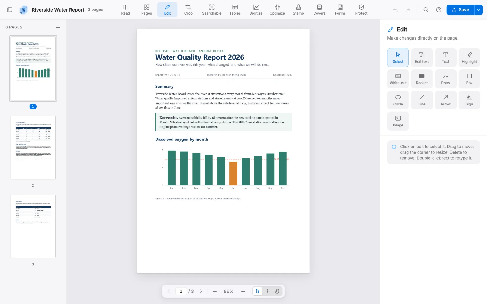
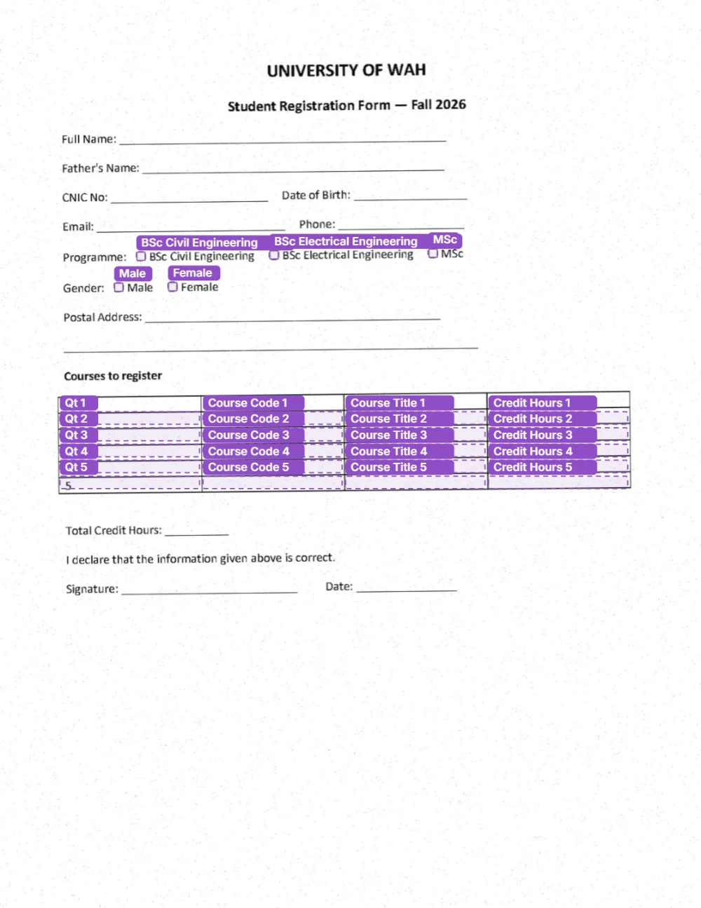
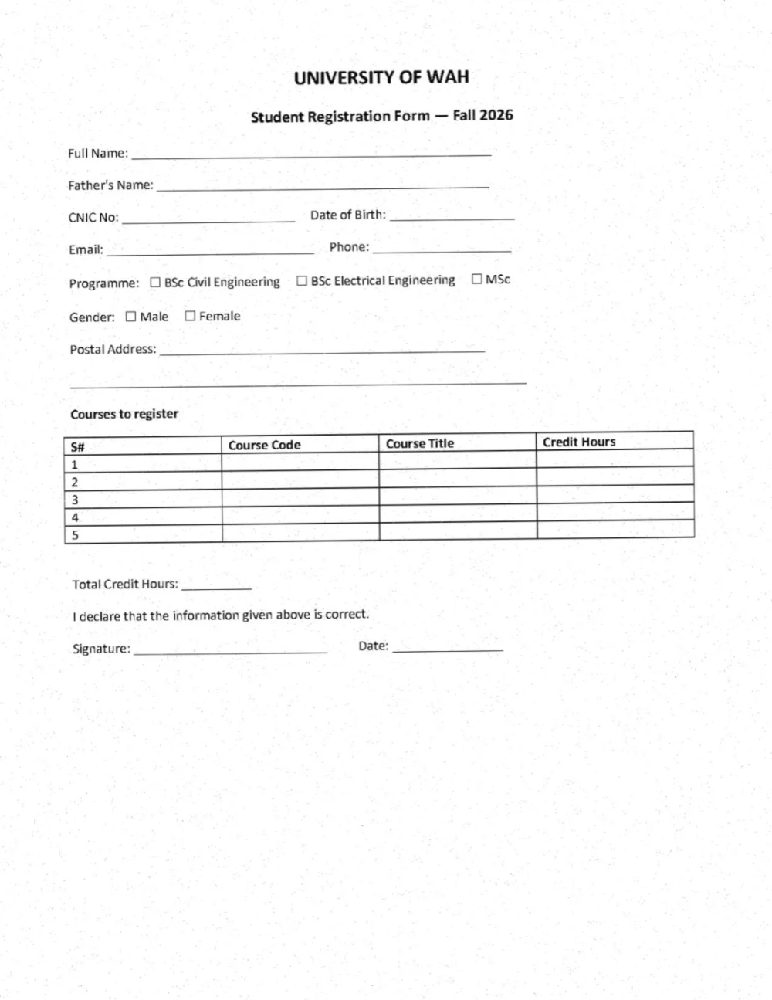
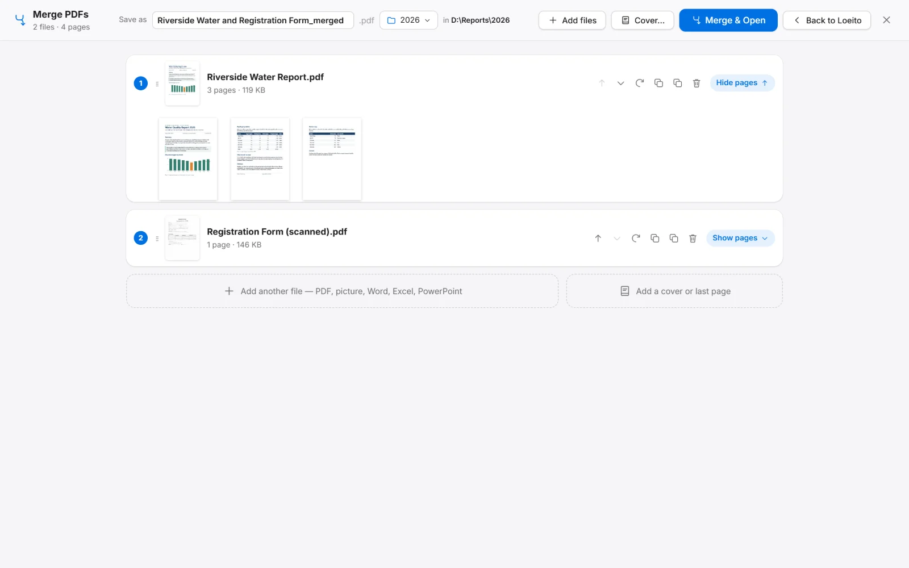

Merge
PDFs, pictures and Office files, in the order you want. Change the merge afterwards and merge again.
Free · Open source · Offline
Loeito is a calm PDF app for the work you actually do: read, merge, edit, sign, fill forms, make scans searchable and pull tables into Excel. Your files never leave your computer.
Windows, macOS (Apple chip and Intel) and Linux. No account, no subscription.

The tools
Each tool explains itself in plain words, and the document stays in the middle where it belongs.
PDFs, pictures and Office files, in the order you want. Change the merge afterwards and merge again.
Themes, focus mode, contents, read-aloud, and every page in one smooth scroll.
Fix text, highlight, white-out, draw, add pictures and sign by hand or by typing.
Ten templates, fields found for you in flat and scanned forms, a date calendar and totals.
Offline OCR, including Urdu, Arabic, Persian, Chinese and Japanese.
Tables from PDFs and scans into Excel, CSV, Word or Markdown.
Graphs back into numbers; maps into Shapefile, GeoJSON, KML and DXF.
Black out private details for real, remove hidden data and add passwords.
Page numbers, Bates numbers, headers, watermarks and designed covers.
Rotate, reorder, split, extract and trim, with rulers and guides when you need precision.
Make files smaller for email, or change the paper size.
Type what you want to do. Loeito finds the command and takes you there.
Before and after
Loeito looks for the blanks, boxes and table cells in a scanned page and turns them into real fields. Drag the handle to compare.


In action

Private by design
No upload, no account, no telemetry. The desktop app works offline from the first start, with its PDF engine and OCR languages built in. Close the internet and keep working.
This website counts visits without cookies; we use the count to encourage ourselves and to improve. It stores nothing about you. The app has no analytics.
What “free” means here
The third freedom is still growing. Each new version is one more step toward it, and that’s a commitment.
Downloads come from SourceForge, which picks the right file for your computer.
Windows: installer or portable zip · macOS: Apple chip or Intel · Linux: AppImage or .deb.
Windows and macOS may say the publisher is unknown, because Loeito is not code-signed yet. On Windows choose More info, then Run anyway.
Or try it in your browser. The browser version does almost everything; the desktop app adds folders, Office files and passwords.
Support Loeito